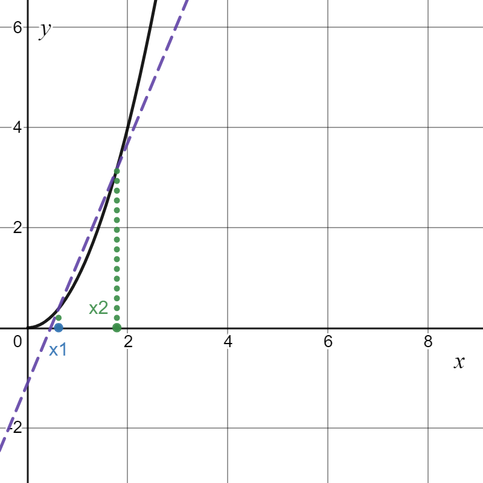
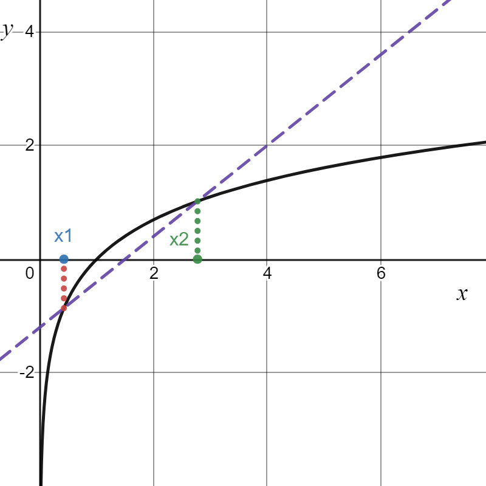
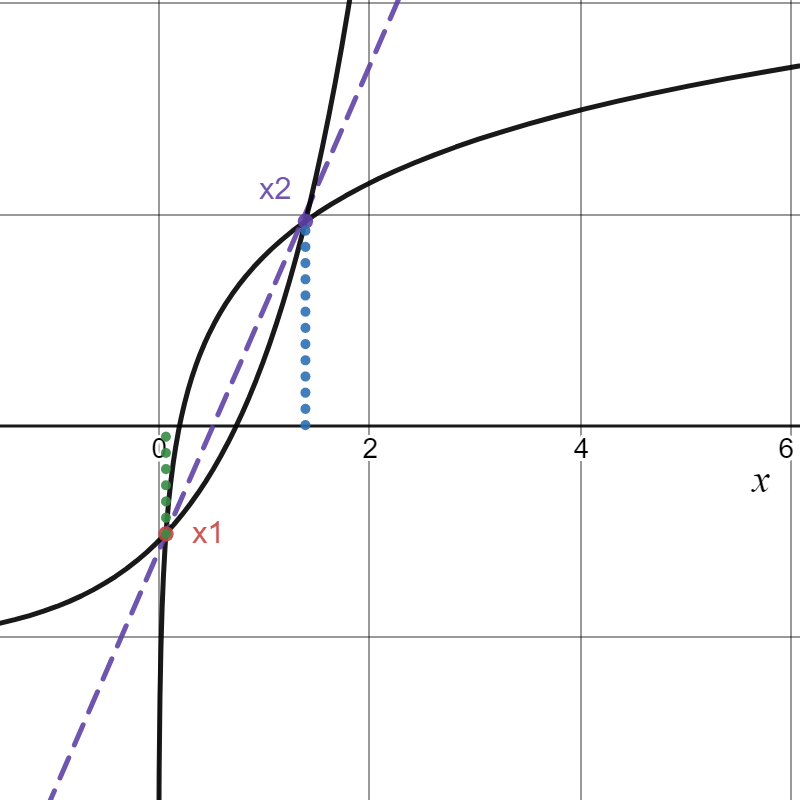
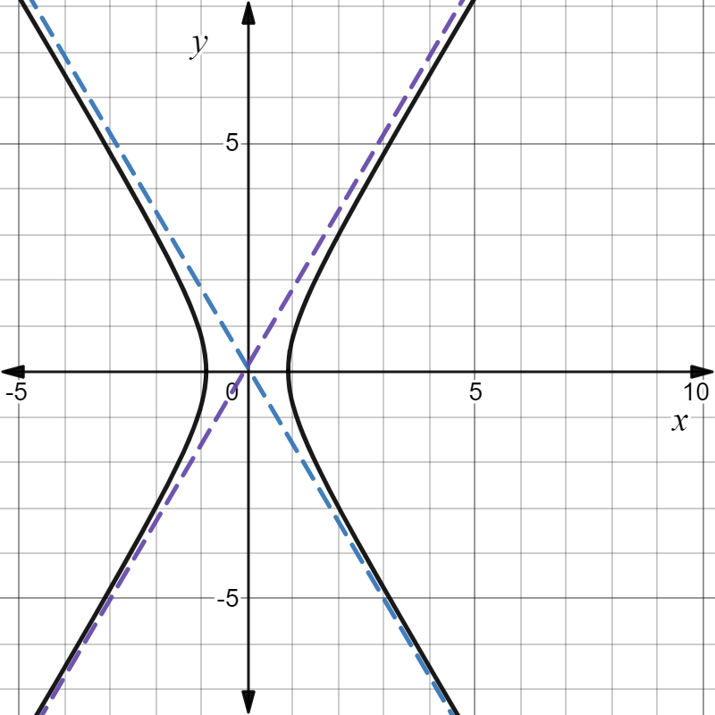
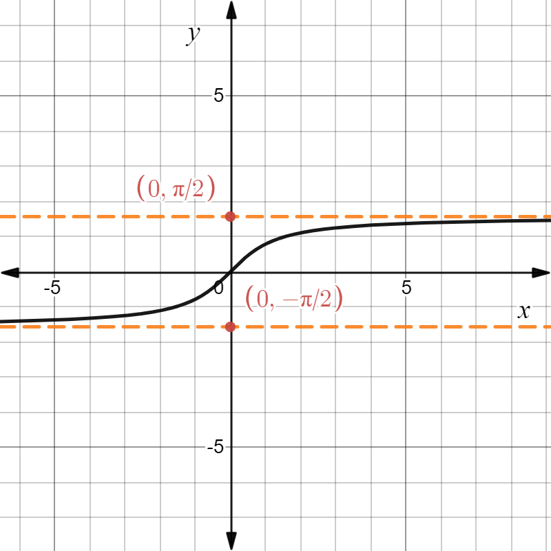

§3.5 函数的凹凸型和图像描绘
引例：
- (上)凹函数 y=x2(x>0)

- (上)凸函数 y=lnx(x>0)

一、函数的凹凸性和拐点
-
定义：f(x) 是 I 上的函数，∀x1,x2∈I，当 f(λx1+(1−λ)x2)≤λf(x1)+(1−λ)f(x2) 时，称为上凹函数；当 f(λx1+(1−λ)x2)≥λf(x1)+(1−λ)f(x2) 时，称为上凸函数（λ∈(0,1)）

-
定理：∀x1<x2<x3∈I
- f(x) 是上凹函数 ⇔x2−x1f(x2)−f(x1)<x3−x2f(x3)−f(x2)⇔f′(x) 单调递增
- f(x) 是上凸函数 ⇔x2−x1f(x2)−f(x1)>x3−x2f(x3)−f(x2)⇔f′(x) 单调递减
-
推论：f(x) 在 I 上二阶可导，f(x) 是上凹函数 ⇔f′′(x)≥0；f(x) 是上凸函数 ⇔f′′(x)≤0
-
拐点：曲线经过 (x0,f(x0)) 后凹凸性改变，称 (x0,f(x0)) 为拐点
例题
- 求 f(x)=(x−1)x32 的凹凸区间和拐点
解：f′(x)=x32+32x−31(x−1)=3x315x−2
f′′(x)=9x342(5x+1)
- x=−51，f′′(x)=0
- x=0，f′′(x) 不存在
| x |
(−∞,−51) |
−51 |
(−51,0) |
0 |
(0,+∞) |
| f′′(x) |
- |
0 |
+ |
不存在 |
+ |
| f′(x) |
上凸 |
拐点 |
上凹 |
非拐点 |
上凹 |
- 上凹区间 (−51,+∞)，上凸区间 (−∞,−51)，拐点 (−51,−53256)
- 证明 sinx>π2x,x∈(0,2π)
证：y=sinx 在 (0,2π) 上为上凸函数，过 (0,0),(2π,1) 两点的直线方程为 y−0=π2x
∴由凸函数定义得 sinx>π2x,x∈(0,2π)，证毕
- 证明 (2a+b)2≤2a2+b2
证：
(λ121a+λ221b)2≤21(a2+b2)
f(λ1x1+λ2x2)≤λ1f(x1)+λ2f(x2) 且 λ1+λ2=1
y=x2 为上凹函数
詹森不等式[Jensen's inequality]
λ1+λ2+⋯+λn=1
f(x) 为下凸（上凹）函数：f(λ1x1+λ2x2+⋯+λnxn)≤λ1f(x1)+λ2f(x2)+⋯+λnf(xn)
f(x) 为下凹（上凸）函数：f(λ1x1+λ2x2+⋯+λnxn)≥λ1f(x1)+λ2f(x2)+⋯+λnf(xn)
- 证明 na1a2⋯an≤na1+a2+⋯+an
证：右边= n1a1+n1a2+⋯+n1an
此时有 λi=n1(i=1,2,⋯,n)
两边取对数
n1(lna1+lna2+⋯+lnan)≤ln(n1a1+n1a2+⋯+n1an)
其中 y=lnx，y′′=−x21<0，为上凸函数
二、曲线的渐近线

- x→∞(+∞或−∞)limf(x)=A，把 y=A 称为水平渐近线
- x→x0limf(x)=∞，把 x=x0 称为垂直渐近线
- 斜渐近线 y=kx+b，其中 k=x→∞limxf(x)，b=x→∞lim[f(x)−kx]
例题
求 y=x2+2x−3x3 的渐近线
解：x→∞limx2+2x−3x3=∞，无水平渐近线
x→1limx2+2x−3x3=x→−3limx2+2x−3x3=∞，垂直渐近线 x=1 和 x=−3
k=x→∞limxx2+2x−3x3=1
b=x→∞lim(x2+2x−3x3−x)=−2
∴斜渐近线 y=x−2
三、函数作图
引例 y=arctanx
- 定义域：D=(−∞,+∞)
- 单调性：f′(x)=1+x21>0，单调递增
- 凹凸性：f′′(x)=−(1+x2)22x，x>0上凸，x<0上凹
- 渐近线：y=±2π
